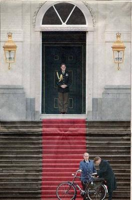

|
|
 Dutch Minister of Justice visiting the Queen by bicycle
From the project 'Greening Urban Transport' by the European Federation for Transport and Environment - 1 This factsheet gives an overview of successful strategies used in European cities to promote the use of the bicycle as a means of transport. European examples of good practiceAll over Europe there are cities where politicians have recognised the potential of the bicycle to solve traffic related problems like congestion and air-pollution. However, there is no such thing as a single model city for bicycle traffic. Several examples were selected to show how bicycle promotion can work under different conditions. Troisdorf (Germany; 65,000 inhabitants) Troisodrf is remarkable not just for its innovative measurers for Bicycle traffic, But also for its public relations efforts and for financing about 70% of its bicycle infrastructure by subsidies from the federal and regional governments. Salzburg (Austria; 145,000 inhabitants) In Salzburg many Bicycle facilities were created but bicycle traffic really soared after the introduction of a new parking policy. Groningen (Netherlands: 165,000 inhabitants) Groningen capital of the Dutch province of Groningen is almost "legendary" for its proportion of bicycle traffic which amounts to approximately 50% of all trips. This success is mainly due to restrictions for car traffic in the city centre as well as traffic-reducing land-use planning. Geneva (Switzerland; 170,000 inhabitants) Geneva is among the cities with the highest degree of motorization Despite this situation, the city became one of the best places to learn about competent planning for bicycle traffic in the latin part of Europe. Basel (Switzerland; 170,000 inhabitants) Keeping the whole network of streets open and usable for cyclists is more important than just building a few cycle-ways. In Basel, most one-way streets are open far two-way bicycle traffic, speed humps have flat passages far cyclists; at big intersections cyclists can use extra lanes for turning to the left and many bus lanes are open for cyclists. Other Examples: York and Houten - mentioned in the T&E-factsheet 'walking in cities' - also are positive examples for the promotion of Bicycle traffic. Further examples are the German towns of Munster and Erlangen. Darmstadt in Germany is well known for legalising cycling in its large pedestrian zone Saarbruucken (Germany) was a 'hopeless case' for cyclists until the city decided to open all one-way streets in 30 km/h-zones for two-way bicycle traffic. Copenhagen (Denmark) is the place where the traditional instrument of bicycle-promotion - the cycle way - has been brought to perfection. Nakskov (Denmark) with 16,000 inhabitants is an example of a very small town that promoted bicycle traffic successfully. Winterthur (Switzerland) has on extensive network of cycle routes and is regarded as the most bicycle-friendly city in Switzerland. By the standards of other European countries, many towns in the Netherlands like Delft, Appeldoorn, Leiden or Tilburg - just to mention a few - are model bicycle cities. Conclusions - lessons learned Promotion of the bicycle can only be part of a successful traffic policyIn many European cities, car traffic still enjoys privileges that make it a perfectly sensible idea to use the car even in city centres. Only after Salzburg abolished free parking in the central districts bicycle use in this area increased by 120% within weeks. Groningen would not have had the slightest chance to reach its high level of bicycle use had it not reserved a fair proportion of road space formerly occupied by cars for public transport and non-motorised road users. Much more than the present 21% of employees living in Basel would go to work by car if the number of company parking lots had not been severely limited in recent years. No bicycle promotion without public relations The decision to use a bicycle largely depends on opinions and attitudes. Changing attitudes towards cycling can bring as big a change in bicycle use as the construction of bicycle facilities. Traffic policy for the bicycle is only successful if it can be sold to the electorate. Both aims - changing attitudes towards cycling and selling good achievements to the electorate - require consequent public relations as part of every program for bicycle promotion. Think about aims before thinking about solutions It is not the aim to build as many cycle paths as possible, but to make the bicycle more attractive as a means of transport. If people are asked why they chose a certain means of transport, "saving time" is always mentioned as the most important reason. Safety only comes in second place, and convenience comes third. This means that cycling must be made safer, but also faster (=without delays and detours) and more comfortable. How to make cycling faster The most important task is not just to increase the speed of cycling, but to avoid unnecessary loss of time. Cyclists loose time, for instance, by detours or if they have a shorter green phase at traffic lights. By far the biggest obstacle to cycling are the many regulations for motorised traffic which were never meant for cyclists but cost them a lot of time, one-way streets, no left (right) turn permitted or pedestrian zone (in some cases). The ideal target would be to give cyclists back the freedom of movement they enjoyed before all those special regulations for motorised traffic were introduced. How to make cycling safer At crossings, using a cycle path can be more dangerous than cycling on the roadway. In most cases accidents are caused by conflicts between cars turning and cyclists going straight on. Only by making conflicts visible and calculable for car drivers accidents can be avoided. Besides efforts to reduce accident risk at crossings, the most important important measure for the safety of cyclists is speed reduction of motorised traffic. How to make cycling more comfortable As mentioned above, cycle ways have very little to do with safety but they have a lot to do with comfort. It makes cyclists feel comfortable to be separated from motorized traffic. Cycle paths should be wide enough, clearly separated from the pavement and they should have smooth asphalt paving . As bicycles do not have suspension, kerbstones, stone paving and the like should not be put in the way of cyclists. Major errors to be avoided: A pavement is not a cycle wayShared pavements for cyclists and pedestrians or 'cycle ways' built on pavement-level or just painted on pavements are an invention of car-orientated traffic planning of recent decades. Cycling on pedestrian pavements is dangerous in any case (legalised or not). Space for cyclists should always be taken from the roadway and not from the pavement. A cyclist is not a pedestrian on wheels Both walking and cycling seem to Be "Slow" compared with motorized traffic. It is easily forgotten that the average cyclist moves five times as fast as the average pedestrian. Therefore competent traffic engineering for bicycle traffic has very little in common with traffic engineering for pedestrians Checklist for bicycle-friendly citiesThe design of Bicycle facilities follows the rules and principles of vehicle traffic (direct left turns, no two-way Bicycle traffic on one side of the road). The European Federation for Transport and Environment The European Federation for Transport and Environment (T&E) campaigns on a Europe-wide level for an environmentally sound approach to transport. The Federation was founded in 1989 as a European umbrella for non-governmental organisations working in the field of transport and the environment. At present T&E has 25 member organisations in 15 countries T&E closely monitors developments in European transport policy and submits responses on all major' papers and proposals from the European (5orS,miss,or, IP~H also initiates projects and publishes reports on important issues in the field of transport and the environment Greening Urban Transport is one of them |